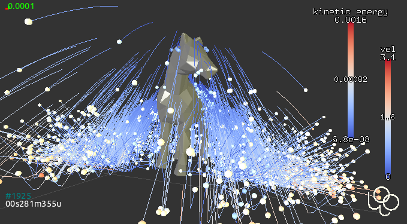
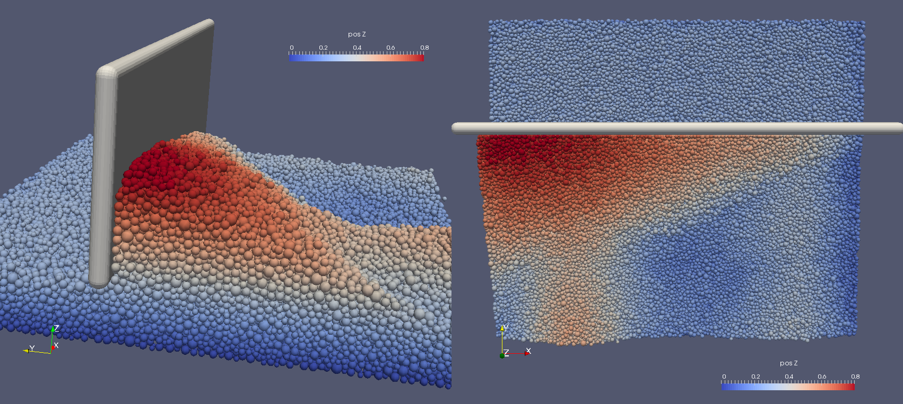
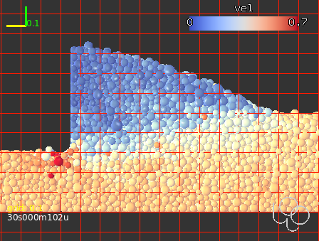
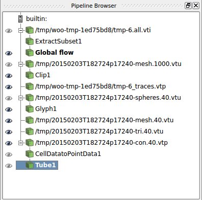
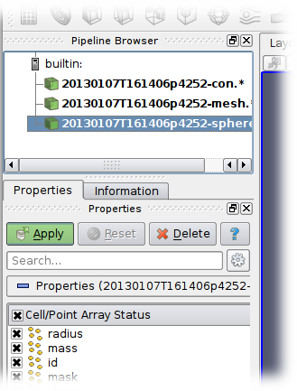
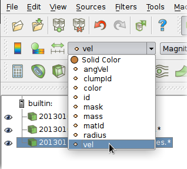
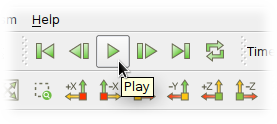

Visualization¶
Integrated 3d view¶
The 3d view is opened by the “3D” button in the controller, or by calling woo.qt.View(). It is based on OpenGL and rather flexible.

Mouse can be used to manipulate the camera:
left drag rotates
middle drag (wheel) moves
right drag (wheel) zooms
double left-click sets view angle to the closes multiple of 45°
Alt + left-click selects object (and shows distance to the previous selection)
Many keyboard shortcuts are defined of which the most important ones are:
h shows help;
t toggles perspective/orthographic camera type;
c centers the view around whole scene; Alt-c centers the view intelligently around that part of the scene where most particles are;
q (as quality) cycles the FPS (frames per second value): 2, 5, 10, 15. Shift-Q toggles fast display (useful with many particles)
a toggles display of axes;
g displays axes grids (cycles between all possible combinations; Shift-G toggles all on/off)
x, X, y, Y, z, Z: make selected axes point upwars and align the other two, i.e. show respectively the
zx,yx,xy,zy,yz,xzplane;s toggles displacement/rotations scaling (see
woo.gl.Renderer.scaleOn); Shift-S sets reference positions to current ones;d selects which time information is displayed (cycles through all combinations);
Ctrl-c copies the view to clipboard, as raster image (can be pasted to documents/graphics editors).
Colorscales can be manipulated using mouse:
wheel changes size
right-draw moves, and toggles portrait/landscape when touching the edge
left-click resets the range an sets to auto-adjust
A movie from the 3d view can be made by checking the first, and, when sufficient number of snapshots will have been save, clicking .
Display control¶
The Display tab of the controller configures the 3D display. Woo dispatches OpenGL display of all objects to objects (always called Gl1_*) responsible for actual drawing, which is also how this dialogue is organized.

Renderer configures global view properties – initial orientation, displacement scaling, lighting, clipping, and which general items are displayed. Useful options are woo.gl.Renderer.engines> for showing/hiding engines which render something (typically inlets/outlets) and woo.gl.Renderer.ghosts for repeating particles in periodic boundary conditions.
Gl1_DemField (shown on the image) is reponsible for displaying contents of DEM simulations (woo.dem.DemField) – particles, contacts between particles and so on.
Particle coloring¶
When displaying the DEM scene, particles matching shape attribute are colored using the method specified with colorBy. Colormapping is controlled via the colorRange object, which is automatically switched based on colorBy.
Particles not matching shape, or those which cannot be color-mapped using colorBy (e.g. non-spherical particle by radius) will fall back to shape2 (which can be turned off) and colored using colorBy2 and colorScale2.
Active color-mapping scale will be shown in the 3d view automatically, and can also be manipulated by mouse (resetting via right-click and so on).
Once particle’s color is determined, particle’s shape is dispatched to Gl1_* objects (e.g. woo.gl.Gl1_Sphere, woo.gl.Gl1_Facet, …), which control shape-specific options, such as display quality, forcing wire display and so on. Those are again parametrizable from the Display tab. These object can also be saved along with the simulation (by stuffing them to woo.core.Scene.any, for instance); they are (currently) static, so loading then will overwrite current values.
Quality¶
woo.gl.Renderer.fast (toggled via Q in the 3d view) switches between normal, fast and “unfocused” fast display (when the 3d windows is not focused). Fast display is useful for huge simulations where regular rendering would be demanding on the 3d hardware, and also useless for just seeing what is happening.
Displacement scaling¶
woo.gl.Renderer.dispScale and rotScale allow for scaling displacements and rotations, which is very useful for situations where movements are vey small compared to particle size, thus regular view only reveals static scene. Scaling can be turned on/off via s from the 3d view, and reference positions are set by pressing Shift-S (this can be also done from the Display/Renderer tab).
Velocity/forces¶
Velocities, forces (or virtually any other glyphs attached to nodes by the user) are shown by setting woo.gl.Gl1_DemField.glyph (under ).
Fig. 1 Velocity shown as arrows. The particles are also colored by velocity, therefore there are two colorscaled shown.¶
Contact network¶
configures how contacts are displayed. By default, contacts are not displayed at all. cNode bits can show contacts as lines, show contact-local coordinates, or user-attached woo.core.NodeVisRep object.
Contact network, where contacts are shown as cylinder, with radius corresponding to transmitted force, is shown by setting cPhys. The rest is configured in the respective functor, i.e. under . Coloring can depend on normal or shear force, and radius of cylinders can be set. To better see contact network, it is often useful to hide particles by unsetting Gl1_DemField.shape and Gl1_DemField.shape2, or, with spherical particles, show them smaller than they really are by using woo.gl.Gl1_Sphere.scale.
Fig. 2 Force chain in cylindrical triaxial test, with default settings of woo.gl.Gl1_CPhys.¶
Particle traces¶
The tab serves to enable the Tracer engine, which attaches TraceVisRep to each node within the DemField and periodically stores position data, with some attached scalar (velocity, time, etc) which is used for coloring the trace. The trace works either as circular buffer (with zero :obj:~woo.dem.Tracer.compress`), or as fixed-length storage with varying resolution (older data being pruned, the latest having always the highest resolution).
Traces support displacement scaling and periodic boundary conditions. Traces can be restricted to particles of some specific radius (rRange); quasi-random selection can be achieved using the modulo.
This image shows the horse where particles are colored by velocity and traces by kinetic energy:
Movies¶
Movie can be made from snapshots of the 3d view taken by woo.qt.SnapshotEngine. This engine is usually activated from the control panel in ; snapshots are taken using the usual periodicity parameters; video from those snapshots is created when clicking the button.
Clipping¶
Clipping (by a clipping plane) is useful for showing what happens in an interior of a volume, or removing particles which are obstructing the view; this simulation was about leveling heap of particles by screed wall
and this image insightfully shows velocity profile in the middle of the heap:
Clipping is set interactively by pressing F1, F2 or F3 (for manipulating respectively clipping plane number 1, 2 or 3); the clipping plane manipulation is exited by pressing Esc. The plane is shown as grid. The following keyboard shortcuts are used to manipulate clipping planes:
Space activates or deactive current clipping plane (deactivated plane will have no effect);
dragging the mouse rotates the plane around its center, left-draggign moves the wall center;
mouse wheel moves the plane along its normal;
x, y, z aligns the normal with the respective axis;
r reverts the normal of the current plane;
1, 2, 3 copies orientation from clip plane no. 1, 2 or 3 respectively (this is useful for making 2 planes parallel whcn showing a slice)
Alt-1, Alt-2, Alt-3 adds clip plane of that number to the “bound group”, which retains its relative positions and rotation if one of the planes is rotated.
Note that particles are always fully clipped, halves of particles will not be shown.
Paraview¶
Paraview is multi-platform data analysis and scientific visualization application. Woo can export two types of data:
snapshots of particles and contacts for visualization or evolution analysis using
VtkExport;time-averaged and space-averaged data for flow and segregation analysis using
FlowAnalysis;particle traces, as collected by
Tracer.
The first two are shown in this movie, created in Paraview from the woo.pre.horse.FallingHorse simulation:
Paraview data sources¶
VtkExport¶
VtkExport is a periodic engine which saves particles and contacts in regular intervals; this results in several time-series of data which can be used e.g. to create beautiful movies from Paraview; Paraview visualization capabilities are far more advanced than what the 3d view in Woo offers, which is in contrast more DEM-specific, thus more useful in other situations.
Woo[1]: S.engines=S.engines+[
...: VtkExport(
...: # run every 100 steps
...: stepPeriod=100,
...: # the default is what=VtkExport.all, no need to specify it usually
...: what=VtkExport.spheres|VtkExport.mesh|VtkExport.tri|VtkExport.con,
...: # where will the output go; can use {tags}
...: out="/tmp/{tid}-",
...: )
...:
File "<ipython-input-1-00a7f490484d>", line 9
)
^
SyntaxError: unexpected EOF while parsing
Output files can be opened by hand (tedious, but detailed below for reference), or using script which automated creating of the visualization pipeline.
FlowAnalysis¶
FlowAnalysis is an engine which periodically stores flow data interpolated in a uniform grid. The theory is described in Flow analysis. The woo.paraviewscript.fromEngines introduced below recognizes the presence of FlowAnalysis and puts its data into the visualization pipeline script as well.
Tracer¶
Particle traces, if relevant data are collected with an instance of Tracer, are also exported by woo.paraviewscript.fromEngines for use in Paraview. Note that trace data can considerably increase dataset size.
Pipeline script¶
Loading files manually (detailed below) is not very easy. Fortunately, there is a handy command woo.paraviewscript.fromEngines which writes Paraview script including all setup, by scanning engines in the simulation:
Woo[2]: # import woo.paraviewscript
# use launch=True to run Paraview right away
# this writes into temporary file
Woo[3]: # woo.paraviewscript.fromEngines(S,launch=True)
# writes into user-defined file
Woo[4]: # woo.paraviewscript.fromEngines(S,out='something.py')
The script can be then used in 2 ways:
As script to be run with Paraview, which will load all necessary files and set the visualization pipeline up:
paraview --script=something.py
This can also be achieved from Paraview GUI by going to .
As a means to zip all or some (using the
--sliceoption) data files and the script itself, e.g. for easy transfer or archiving (run with--helpfor more help):python something.py --zip --slice=-1:
The script is also used internally when the Open in Paraview button in the VtkExport is clicked from the Inspector.
The script creates entries for spherical particles, for flow analysis data, contact networks, triangulated surfaces with opacity and more. The auto-created pipeline can look e.g. like this:
Making movies¶
Movies are important for cool presentatations. Once the visualization pipeline is set up to your satisfaction, go to .
Manual pipline setup¶
The visualization pipeline can be set up by hand. The following covers how this is done. The user should normally not need to to this, though.
VtkExport produces files periodically, and every time several files may be created, for example:
/tmp/20130107T161406p4252-con.1040.vtp
/tmp/20130107T161406p4252-mesh.1040.vtu
/tmp/20130107T161406p4252-spheres.1040.vtu
Those can be loaded into Paraview as groups. Note that the /tmp/{tid}- (from the example above) was expanded (see Tags) to /tmp/20140620T145830p6238- and different endings were appended for different data (con for contacts, mesh for boundary meshes, spheres for spherical particles, tri for triangulated particles). Each ... hides series of step numbers (40, 80, 120, …) which Paraview loads sequentially.
-con contains contact data, -mesh mesh data (triangulated surfaces), -spheres data concerning spherical particles. You can open all datasets at once with Paraview by selecting them with Ctrl:
Datasets appear in the Pipeline browser, but will not be displayed until the Apply button is clicked.
Every dataset can be colored, e.g. velocity can be used as coloring scalar by selecting that property:
Datasets can be visualized at different timesteps using the frame control in the Paraview menu:
Spherical particles¶
You notice that spherical particles are rendered as points rather than spheres. In order to see spheres, sphere “glyph” has to be attached to each point, and it will be scaled by the radius scalar defined in each point (particle).
Select the -spheres dataset in the Pipeline browser, then add glyph using the  icon. In the Properties for the glyph, set the following:
icon. In the Properties for the glyph, set the following:
Glyph type = Sphere;
Radius = 1 (further scaled by selected scalars to obtain true radius);
Scale Mode = scalar;
Set Scale Factor = 1;
disable Mask Points and Random Mode;
on the top, set Scalars = radius.
Since glyphs are rendered over points of the dataset, those can be made invisible by clicking on the eye icon next to the -spheres dataset in the Pipeline browser.
Force Network¶
Presenting contacts as cylinders of which radius varies by transmitted force is possible in Paraview.
Load and select the
-condataset.Add the “Point Data to Cell Data” filter.
Add the “Tube” filter; in there set:
“Scalar” to
Fnor|Ft|depending on how you want to scale cylinders;“Vary Radius” to “By Scalar”;
“Radius” to something rather small compared to particle radii;
“Radius Factor” to something big, like 1000; the last two parameters determine how much the radius varies by force.
Pov-RAY¶
Pov-RAY is open-source raytracing code. Woo supports output to POV-Ray via woo.dem.POVRayExport. Particles are assigned textures based on their masks (in the future, texturing by woo.dem.Material instances is envisaged); camera parameters, texture definitions and others can be independently hand-tuned. Texturing procedures are informed about particle diameter, which is useful for scaling according to particle size.
Refer to examples/povray-export.py for a simple example.
In the following movie, focal blur, procedural textures and bump-mapping (particles are ideally spherical in the simulation) are used for semi-realistic view of the scene. Rendering >700 frames in the 2000x1500 resolution took many hours. View this movie at youtube for better resolution.
Tip
Report issues or inclarities to github.